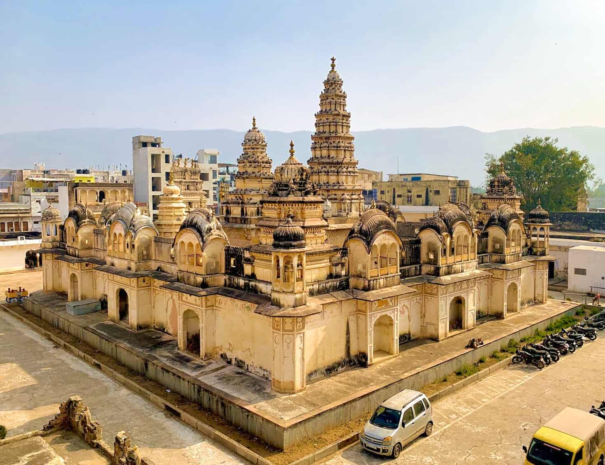
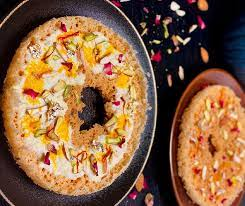
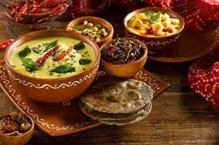
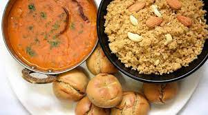
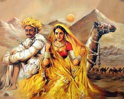
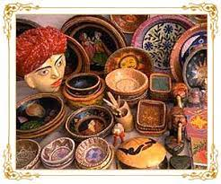
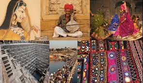

WELCOME TO RAJASTHAN
"Rajasthan is best described as land of Kings and Kingdoms, architectural wonders, cultural extravaganza, fabulous history and warm hospitality".
Rajasthan- a vibrant state of Incredible India is a land of colorful mélange of massive forts, diverse culture, stunning palaces and delectable cuisines that serve as a lush exhibition of exotica for keen onlookers. The state is known for great hospitality and invites visitors with melodious and beautiful song ‘Padhaaro Maare Desh’ translates to please come to my land. Its delights of fabulous past have been preserved since many centuries and civilizations, cultivating a rich cultural heritage and placing India on International map. Thus, amalgamation of folk dance & music, golden sand desert, camels and the pride of Rajasthani men, colorful and large turbans make it an awesome place to visit and enjoy unforgettable vacations. Sprawl over an area of 342239 sq km, Rajasthan is crowned with the pride for North Indian state. The state is dotted with lot of tourist attractions which seems perfect holiday destination for visitors of all ages. In other words, we can properly say that a tour in Rajasthan is the complete bouquet for the vivid travelers..
Even a quick stop at its capital city, Jaipur which is mirror of the state as it is flooded with majestic forts and palaces such as the Hawa Mahal, Jal Mahal, Amer Fort, lakes and monuments, architectural glories and has many other attractions like Chokhi Dhani that mesmerizes the tourists. The village tour of the royal state is an alternate way to enjoy the rustic beauty of the place. Even the air of majestic state sprays fragrance of cultural opulence everywhere. It is not just the architecture excellence of the city but here the world fame cities like Jaisalmer and Jodhpur are showcase of modern day artifacts too. One thing that pulls the attention of tourists while traveling through Rajasthan is the urban locality of the state that they are still closely associated with the old culture and tradition so that they can maintain the legacy of the past. The fairs and festivals that reflect the old traditions and rituals may surprise you at once. The world fame cattle fairs like Pushkar and Nagaur attracts lots of tourist. Beside this the most popular fairs and festivals are Mewar, Marwar, Teej, Elephant, Gangaur, Kite and many more that can be enjoyed round the year..
History :
The glorious history of Rajasthan is about 5000 years old. The downfall of well established Gupta Empire marks the inception of Rajputana – a cluster of several Princely States of Rajasthan.
The state faced many Muslim attacks but the courage and honor for the land kept Rajputs community strong.
The era of evolution gave birth to the great leaders like Prithviraj Chauhan who defeated the invading Muhammad Ghori and Rana Pratap of Mewar who challenged the mighty Mughal Emperor Akbar..
However, the arrival of British East India Company in the region led to the administrative disintegration and during the 18th century, the Mughal Empire faced a major setback. Most of the Rajputana province continued with self-governance.
The situation improved at the time of independence when Rajputana majorly comprised of 18 princely states joined hands with each other..
The year 1950 mark the merger of all 18 princely provinces into one united Sates of Rajasthan and Maharaja of Jaipur Sawai Man Singh II was elected as the Rajpramukh. Today Rajasthan has 33 districts..
Top Tourist Places and Attractions in Rajasthan
Jaipur
udaipur
Jodhpur
Jaisalmer
Bikaner
ajmar
mountabu
Pushkar
Topography :
Bestowed with varying topographic features, the major parts of the state are dominated by parched and dry region. The extensive topography includes rolling sand dunes, rocky terrain, land filled with thorny scrubs, wetlands, plateaus and wooded regions. The state is home to the Great Indian Thar Desert and the Chambal River which is boon for the state and provides water supply in the region..
The Food :
Along with rich heritage, culture, magnificent forts and palaces; one of the major attractions of Rajasthan is delicious and finger licking cuisine.
The state makes its tourists happy from every corner whether by entertaining or by serving delectable food.
Traditional cuisines of Rajasthan are very much popular among visitors. Fascinating Rajasthan cuisine has been influenced by geomorphology and climatic condition. Famous dishes like Daal Bati Churma and Bajra ki roti with lasun chutney are the state classic signature dish..



Arts and Culture :
Another feather in the cap of enchanting Rajasthan tourism is its authentic civilization and rich culture that speak ample of things about vibrant state.
Its cultural heritage is also rich and perhaps carefully nurtured over centuries starting from Harappan civilization, Aryans, Bhills, Jains, Jats and Muslims. Rajasthani arts and crafts are beyond comparison and famous across the globe.


